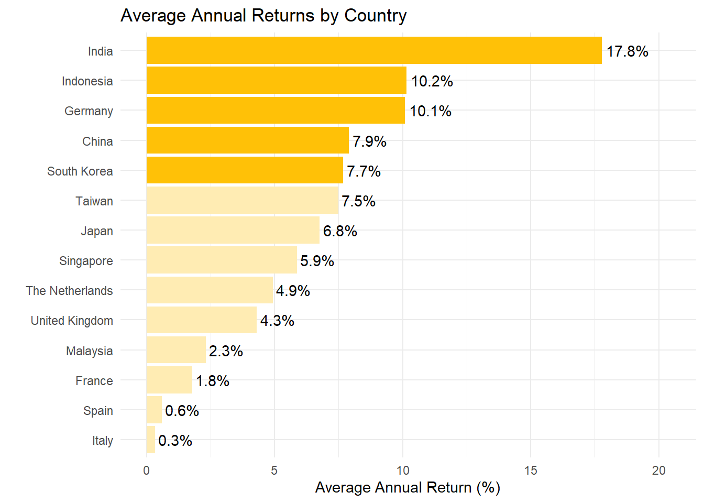
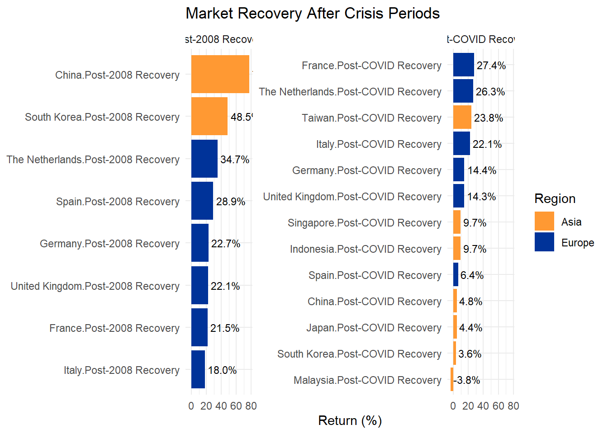
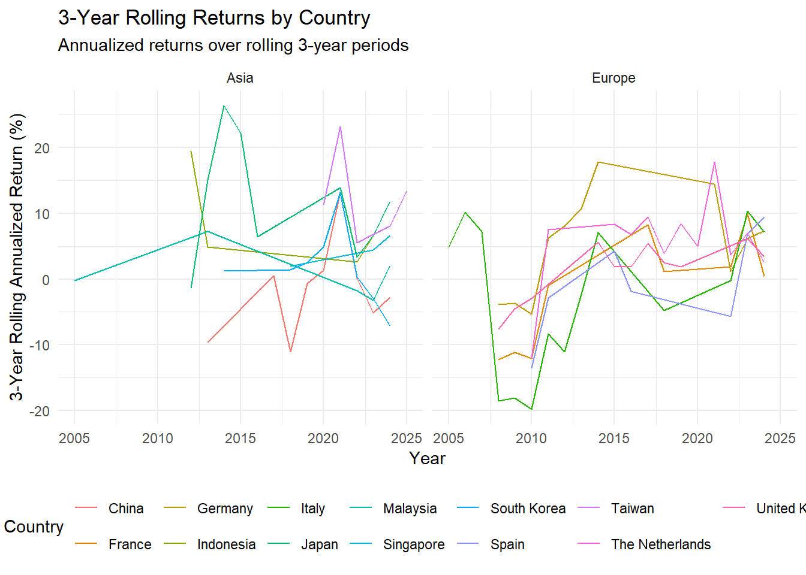

| Country | Mean Return | Median Return | Std Dev | Coef of Variation | Sharpe Ratio | % Positive Years | # Years |
|---|---|---|---|---|---|---|---|
| India | 17.77% | 18.68% | 25.51% | 1.44 | 0.697 | 85.7% | 7 |
| Indonesia | 10.16% | 6.16% | 15.01% | 1.48 | 0.677 | 77.8% | 9 |
| Singapore | 5.87% | 3.86% | 9.63% | 1.64 | 0.610 | 55.6% | 9 |
| Germany | 10.08% | 17.01% | 18.76% | 1.86 | 0.537 | 81.2% | 16 |
| Taiwan | 7.48% | 10.20% | 18.91% | 2.53 | 0.396 | 66.7% | 12 |
| South Korea | 7.68% | 5.43% | 19.55% | 2.55 | 0.393 | 64.3% | 14 |
| United Kingdom | 4.31% | 5.84% | 12.39% | 2.88 | 0.348 | 76.5% | 17 |
| Malaysia | 2.31% | -0.20% | 6.71% | 2.90 | 0.345 | 50.0% | 10 |
| Japan | 6.77% | 8.07% | 22.62% | 3.34 | 0.299 | 66.7% | 15 |
| The Netherlands | 4.93% | 8.17% | 20.45% | 4.15 | 0.241 | 75.0% | 16 |
| China | 7.91% | 3.67% | 43.70% | 5.52 | 0.181 | 56.2% | 16 |
| France | 1.78% | 3.40% | 17.51% | 9.82 | 0.102 | 56.2% | 16 |
| Spain | 0.60% | -0.82% | 19.92% | 33.35 | 0.030 | 46.7% | 15 |
| Italy | 0.33% | 3.72% | 19.55% | 59.11 | 0.017 | 50.0% | 18 |
Index Market Analysis Report
Comparative Analysis of Asian and European Markets
Introduction
This analysis explores investment opportunities across Asian and European markets, focusing on:
- Identifying stable markets for consistent profits
- Finding high-return countries for growth investment
- Determining markets to avoid
- Comparing investment attractiveness between Asia and Europe
Executive Summary
Our analysis of financial market performance across Asia and Europe reveals several key insights:
- Most stable markets: India, Indonesia, and Singapore show the best combination of stability and returns
- Highest returning markets: India, Indonesia, and Germany lead in average annual returns
- Markets to avoid: Italy, Spain, and France show poor risk-adjusted returns
- Regional comparison: Asian markets show higher average returns but with higher volatility, while European markets (particularly Germany and Netherlands) demonstrate more consistent outperformance against benchmarks
Let’s explore the detailed analysis.
1. Market Stability Analysis
First, we’ll analyze market stability by looking at volatility measures and risk-adjusted returns.
1.1 Risk-Adjusted Returns Visualization
1.2 Consistency of Returns
2. High-Return Markets Analysis
Let’s identify the highest returning markets and their performance characteristics.

2.1 Annual Returns of Top Performers
3. Markets to Avoid
Based on our analysis, we’ll identify the markets with poor risk-adjusted returns.

4. Regional Comparison: Asia vs. Europe
Let’s compare the performance of Asian vs. European markets to determine which region is more attractive for investment.
| Region | Mean Return | Median Return | Std Dev | Sharpe Ratio | % Positive Years | % Outperformance |
|---|---|---|---|---|---|---|
| Asia | 7.79% | 6.03% | 24.06% | 0.324 | 64.1% | 47.8% |
| Europe | 3.64% | 6.24% | 18.09% | 0.201 | 64.3% | 48.0% |
4.1 Outperformance Analysis by Region
4.2 Return vs Outperformance Correlation
5. Visualizations from Original Code
Let’s implement the visualizations you provided in your original code.
5.1 Country Performance vs Benchmark
5.2 Performance Heatmap
5.3 Outperformance Frequency
5.4 Additional Visualization: Volatility Over Time
5.5 Additional Visualization: Return Distribution
5.6 Market Correlation Heatmap
Understanding correlations between markets is crucial for diversification strategies.
5.7 Return Distribution by Country
This visualization helps us understand the distribution of returns for each country.
5.8 Performance During Crisis Years
How did different markets perform during financial crises?

6.4 Recovery After Crises How quickly did markets recover after crises?

5.9 Rolling Performance Analysis
This visualization helps understand performance consistency over time.

5.10 Risk-Return Efficiency Frontier
This visualization helps identify the most efficient markets in terms of risk-return tradeoff.
5.11 Interactive Dashboard Elements
Creating interactive elements for a dashboard approach.
6.Conclusion
Based on our analysis, we can draw the following conclusions to answer the initial questions:
What markets are more stable to make a profit?
| Country | Mean Return | Std Dev | Stability (CoV) | Sharpe Ratio | % Positive Years |
|---|---|---|---|---|---|
| India | 17.77% | 25.51% | 1.44 | 0.697 | 85.7% |
| Indonesia | 10.16% | 15.01% | 1.48 | 0.677 | 77.8% |
| Singapore | 5.87% | 9.63% | 1.64 | 0.610 | 55.6% |
| Germany | 10.08% | 18.76% | 1.86 | 0.537 | 81.2% |
| Taiwan | 7.48% | 18.91% | 2.53 | 0.396 | 66.7% |
What markets are high-return country?
| Country | Mean Return | Std Dev | Sharpe Ratio | % Positive Years |
|---|---|---|---|---|
| India | 17.77% | 25.51% | 0.697 | 85.7% |
| Indonesia | 10.16% | 15.01% | 0.677 | 77.8% |
| Germany | 10.08% | 18.76% | 0.537 | 81.2% |
| China | 7.91% | 43.70% | 0.181 | 56.2% |
| South Korea | 7.68% | 19.55% | 0.393 | 64.3% |
What markets should be avoided for investment?
| Country | Mean Return | Std Dev | Sharpe Ratio | % Positive Years |
|---|---|---|---|---|
| Italy | 0.33% | 19.55% | 0.017 | 50.0% |
| Spain | 0.60% | 19.92% | 0.030 | 46.7% |
| France | 1.78% | 17.51% | 0.102 | 56.2% |
| China | 7.91% | 43.70% | 0.181 | 56.2% |
| The Netherlands | 4.93% | 20.45% | 0.241 | 75.0% |
By region, which market will be attractive, Asia or Europe?
| Region | Mean Return | Median Return | Std Dev | Sharpe Ratio | % Positive Years | % Outperformance |
|---|---|---|---|---|---|---|
| NA | NA | NA | NA | NA | NA | NA |
| :------ | -----------: | -------------: | -------: | ------------: | ----------------: | ----------------: |
Summary of Investment Recommendations
Based on our comprehensive analysis, we recommend:
For stable returns: Focus on India, Indonesia, and Singapore, which provide the best balance of stability and returns.
For growth-oriented investors: Consider India, Indonesia, and Germany, which have demonstrated the highest average returns with acceptable risk profiles.
Markets to avoid: Italy, Spain, and France show poor risk-adjusted returns and inconsistent performance.
Regional allocation:
- Asia offers higher average returns but with greater volatility, suited for growth-oriented investors with higher risk tolerance
- Europe (particularly Germany and Netherlands) shows more consistent outperformance against benchmarks, better suited for more conservative investors
Optimal portfolio strategy: Consider a balanced approach with:
- Core allocation to stable markets (India, Indonesia, Singapore)
- Growth allocation to high-return markets (add Germany)
- Regional diversification with select European markets (Germany, Netherlands)
- Avoid underperforming markets (Italy, Spain, France)
Caution
This analysis document does not guarantee for your business operations. This is the case study to understand the movement of national index market.